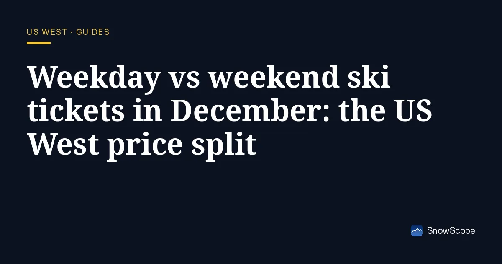

Weekday vs weekend ski tickets in December: the US West price split
The cheapest December ski trick in the US West is not a pass or a coupon. It is the calendar. Seven ski areas on our list publish a clear weekday or off-peak price, and the gap to the weekend price is real money.
See the live snow forecast for US West in the SnowScope appSnow depth, powder alerts and the 3D map, free.
The split, area by area
Ski Cooper (Colorado): $49 Monday to Friday outside holidays, $99 on weekends and holidays. Lookout Pass (Idaho): $63 midweek with a reservation, $75 on weekends, $79 in the holiday period. Montana Snowbowl: $78 on weekdays, $85 on weekends and holidays.
Mt. Baker (Washington): $98.80 Monday to Thursday outside holidays, $115.42 Friday to Sunday and holidays, tax not included. Timberline (Oregon): $129 off-peak, $161 on peak days, which include weekends and December 21 to January 1. White Pass (Washington): online from $69 off-peak and from $89 on peak days, rising as dates sell.

One exception: Wolf Creek's peak days are dates, not weekends
Wolf Creek in Colorado does not split by weekday. Its adult ticket is $96 on regular days and $110 on peak days, and in December the peak days are December 20 to 23 and 26 to 31. A December Saturday before the 20th is a regular day there.
Is the snow there on a weekday in mid-December?
The weekday saving is only worth it if the snow is. On our history, the share of winters with at least 20 in (50 cm) at mid-mountain on 15 December is 93 % at Mt. Baker, 87 % at White Pass, 85 % at Lookout Pass, 83 % at Montana Snowbowl, 78 % at Timberline, 72 % at Wolf Creek and 70 % at Ski Cooper.
Typical mid-mountain depths on that date run from 26 in (66 cm) at Ski Cooper to 46 in (116 cm) at Mt. Baker and 52 in (132 cm) at Timberline.
How to use it
Plan a Monday-to-Thursday trip in the second or third week of December: you avoid weekend prices and the holiday period, and our history says the odds of good snow are already high at most of these areas. Add a Friday at Ski Cooper and you pay its weekday price; add a Saturday and you pay its weekend one.
Tips for skiers
- Take two weekdays off instead of a long weekend: it is the cheapest upgrade in skiing.
- Avoid December 21 to January 1 at Timberline and December 20 to 31 at Wolf Creek if price comes first.
- Book White Pass early for its off-peak floor price, and reserve Lookout Pass for its midweek discount.
- Mt. Baker sells on the day only: bring a card or cash and come early.
References and credits
- Ski Cooper, day pass 2026-27 (official) www.skicooper.com/cooper-day-pass/
- Lookout Pass, lift tickets 2026-2027 (official) skilookout.com/lift-tickets/
- Montana Snowbowl, lift tickets 2026/27 (official) montanasnowbowl.com/sbblog/lift-tickets/
- Mt. Baker Ski Area, daily lift tickets (official) www.mtbaker.us/tickets-and-passes/daily-lift-tickets/
- Timberline Lodge, winter lift tickets 2026/2027 (official) www.timberlinelodge.com/activities/winter/lift-tickets/
- White Pass, online day tickets 2026/27 (official) skiwhitepass.com/online-day-ticket-sales
- Wolf Creek Ski Area, tickets and passes 2026-2027 (official) wolfcreekski.com/tickets-passes/
About these numbers
Snow numbers: SnowScope snow history, 46 past winters (1980-81 to 2025-26) at the base, mid-mountain and top heights given, a reconstruction of past snow for an area corrected for height (ERA5-Land based; Snow_Hydro 1 km for Morocco), not the ski area's own snow reports. Current snow: the SnowScope snow map. Lifts, runs and heights: OpenSkiMap mapping. Prices: the official pages listed below, read on 13 November 2026; dynamic prices change with the date and with demand.
Cite this report
For research, teaching or the press: the numbers and charts are free to reuse under CC BY 4.0 with this citation.
SnowScope (2026), Weekday vs weekend ski tickets in December: the US West price split, https://snowscope.app/blog/en/2026/11/weekday-vs-weekend-ski-tickets-december-us-west.html, accessed 2026-11-15
SnowScope (Atlas Labs). (2026, November 15). Weekday vs weekend ski tickets in December: the US West price split. SnowScope snow reports. https://snowscope.app/blog/en/2026/11/weekday-vs-weekend-ski-tickets-december-us-west.html
BibTeX
@misc{snowscope2026weekdayvsweekendskiticke,
author = {{SnowScope (Atlas Labs)}},
title = {Weekday vs weekend ski tickets in December: the US West price split},
year = {2026},
month = nov,
howpublished = {\url{https://snowscope.app/blog/en/2026/11/weekday-vs-weekend-ski-tickets-december-us-west.html}},
note = {Published 2026-11-15 09:34 UTC; accessed 2026-11-15}
}· CC BY 4.0 · Methods, data and tools →
Follow US West
Free: a message when fresh snow is coming, and the forecast every morning.
More snow reports

Until 7 November, our forecast gives 17 in (44 cm) at Mt Baker, 6 in (14 cm) at Crystal Mountain and 6 in (14 cm) at Stevens Pass. Resort numbers are …

Telluride snow depth: a 45 in cover on the upper slopes (8 November). The early-winter snowpack in the US West is building unevenly, and height makes …

Where should you go skiing in the US West? Three inputs, one shortlist: today's snow depth, the new snow of the last 72 hours and the forecast point …